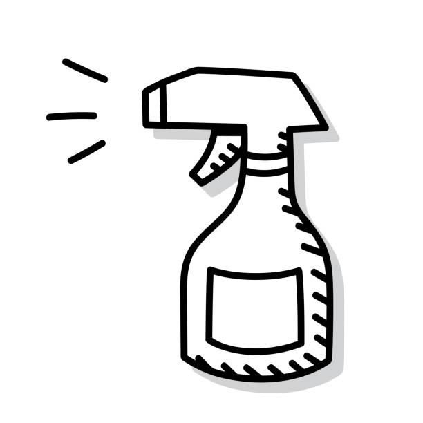

<br>
### <center>Final Project: Glasses Cleaning Machine</center>
<br>
<center><div class="row">
<div class="box" class="col-sm-4">
<a href="https://miamenaa.github.io/PHYS-S12/10_idea/index.html">THE VISION</a>
</div>
<div class="box" class="col-sm-4">
<a href="https://miamenaa.github.io/PHYS-S12/11_process/index.html">THE PROCESS</a>
</div>
<div class="box" class="col-sm-4">

<a href="https://miamenaa.github.io/PHYS-S12/12_final/index.html">FINAL</a>
</div>
</div></center>
<br>
<center>[HOME](../index.html)</center>